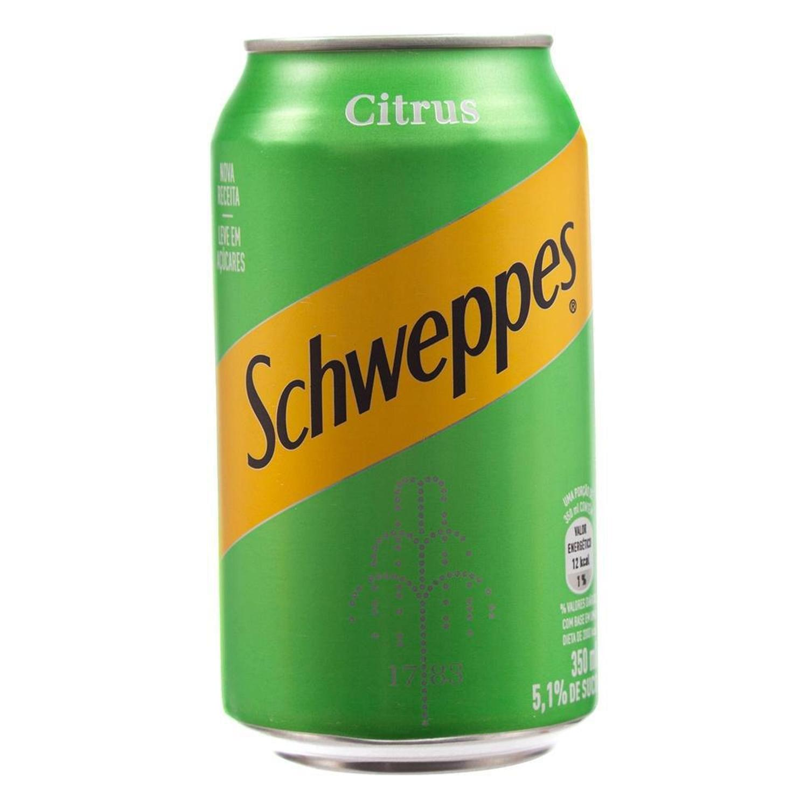

Schweppes
Schweppes é uma linha premium de bebidas, desenvolvida na Inglaterra em 1783 por Jacob Schweppe, um cientista amador que descobriu um método de produzir água carbonatada em escala comercial. Sua primeira fábrica teve lugar em Londres em 1792, produzindo a Schweppes Soda. Elaborado com água gaseificada, açúcar, suco de maçã, grapfruit e laranja, aroma natural e corante artificial tartrazina. Contém caloria, carboidrato e sódio.